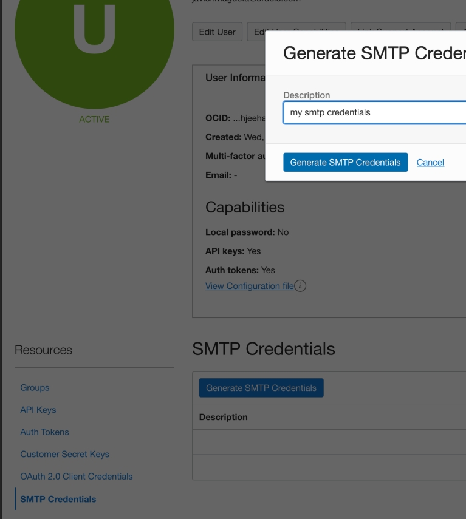
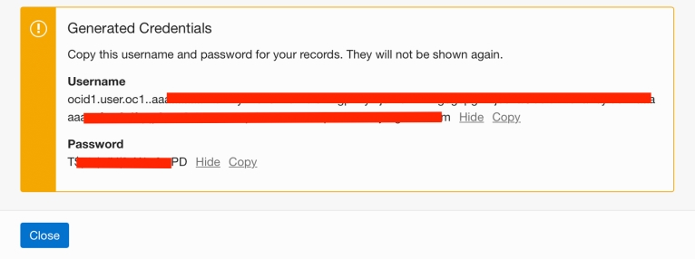
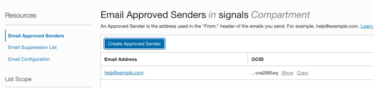
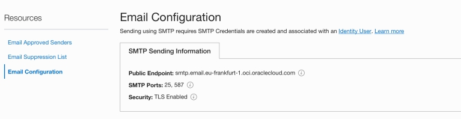
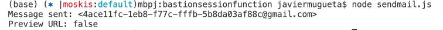
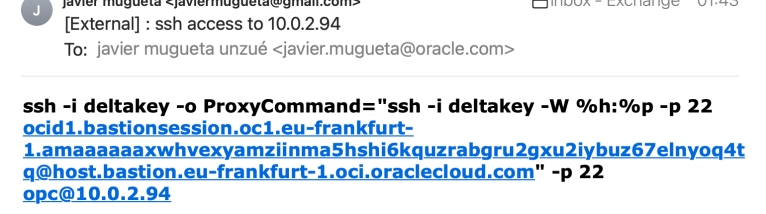

<div class="initial-content">
  <div id="main" role="main">

  <article class="page has-sidebar" itemscope itemtype="https://schema.org/CreativeWork">
    <meta itemprop="headline" content="Sending Emails from OCI with Email Delivery Service in Node.js">
    
    <meta itemprop="datePublished" content="2022-02-14T19:42:00+00:00">
    


    <header>
      <h1 id="page-title" class="page__title" itemprop="headline">Sending Emails from OCI with Email Delivery Service in Node.js
</h1>
      


    </header>

    <section class="page__content" itemprop="text">
      

        <p><em>Oracle Cloud Infrastructure (OCI) <a href="https://docs.oracle.com/en-us/iaas/Content/Email/Concepts/overview.htm">Email Delivery</a></em> is an email notification service that provides a fast and reliable managed solution for sending high-volume emails that need to reach your recipients’ inbox. Email Delivery provides the tools necessary to send application-generated email for mission-critical communications such as receipts, fraud detection alerts, multi-factor identity verification, and password resets.</p>

<p>In this tutorial, we’ll cover all the basics to get you up and running with the Email Delivery service!</p>

<h2 id="set-up-email-delivery">Set up Email Delivery</h2>

<ol>
  <li>
    <p>Go to <strong>IAM/user</strong> and select <strong>Generate SMTP Credentials</strong> as shown below:</p>

    <picture class="">
             <source srcset="assets/ociemailimage-6.jpg 1x" />
             
         </picture>
  </li>
  <li>
    <p>Keep the credentials created in a safe place:</p>

    <picture class="">
             <source srcset="assets/ociemailimage-7.jpg 1x" />
             
         </picture>
  </li>
  <li>
    <p>Create an <strong>Approved Sender</strong> (a real, existing email account to put in the <strong>from</strong> field):</p>

    <picture class="">
             <source srcset="assets/ociemailimage-8.jpg 1x" />
             
         </picture>
  </li>
  <li>
    <p>Grab the connection details:</p>

    <picture class="">
             <source srcset="assets/ociemailimage-9.jpg 1x" />
             
         </picture>
  </li>
  <li>
    <p>Now, test the code:</p>

    <div class="language-console highlighter-rouge"><div class="highlight"><pre class="highlight"><code><span class="go">   npm install [nodemailer](https://nodemailer.com/about/)
</span></code></pre></div>    </div>
  </li>
  <li>
    <p>Create a <code class="language-plaintext highlighter-rouge">sendmail.js</code> file:</p>

    <div class="language-console highlighter-rouge"><div class="highlight"><pre class="highlight"><code><span class="gp">   var nodemailer = require('nodemailer');</span><span class="w">
</span><span class="go">   async function main() {
</span><span class="gp">   let testAccount = await nodemailer.createTestAccount();</span><span class="w">
</span><span class="go">   let transporter = nodemailer.createTransport({
     host: "smtp.email.eu-frankfurt-1.oci.oraclecloud.com",
     port: 25,
     secure: false,
     auth: {
       user: 'ocid1.user.oc1..aaaaaa...om', 
       pass: 'BD..._', 
     },
</span><span class="gp">   });</span><span class="w">
</span><span class="go">   let info = await transporter.sendMail({
     from: '"javier...om', 
     to: "javi...om", 
     subject: "ssh access to 10.0.2.94",
</span><span class="gp">     html: "&lt;b&gt;</span>ssh <span class="nt">-i</span> deltakey <span class="nt">-o</span> <span class="nv">ProxyCommand</span><span class="o">=</span><span class="se">\"</span>ssh <span class="nt">-i</span> deltakey <span class="nt">-W</span> %h:%p <span class="nt">-p</span> 22 ocid1.bast...oud.com<span class="se">\"</span> <span class="nt">-p</span> 22 opc@10.0.2.94&lt;/b&gt;<span class="s2">", 
</span><span class="gp">   });</span><span class="w">
</span><span class="gp">   console.log("Message sent: %s", info.messageId);</span><span class="w">
</span><span class="gp">   console.log("Preview URL: %s", nodemailer.getTestMessageUrl(info));</span><span class="w">
</span><span class="go">   }
</span><span class="gp">   main().catch(console.error);</span><span class="w">
</span></code></pre></div>    </div>
  </li>
</ol>

<h2 id="test-the-configuration">Test the configuration</h2>

<p>Now that you have Email Delivery set up, let’s verify that everything is working properly.  In a console window, run:</p>

<div class="language-console highlighter-rouge"><div class="highlight"><pre class="highlight"><code><span class="go">node sendmail.js
</span></code></pre></div></div>

<picture class="">
                <source srcset="assets/ociemailimage-10.jpg 1x" />
                
            </picture>
<picture class="">
                <source srcset="assets/ociemailimage-11.jpg 1x" />
                
            </picture>

<p>And that’s it! If your local output is similar to what’s shown above, you’re all set and ready to receive notification emails!</p>

<h2 id="whats-next">What’s next</h2>

<p>If you’re curious about the goings-on of Oracle Developers in their natural habitat, come join us on our <a href="https://oracledevrel.slack.com/join/shared_invite/zt-uffjmwh3-ksmv2ii9YxSkc6IpbokL1g#/shared-invite/email">public Slack channel</a>!</p>

<p>And don’t forget our <a href="https://signup.cloud.oracle.com/">free tier</a>, where you can try out what we just discussed.</p>

<p>To explore more information about development with Oracle products:</p>

<ul>
  <li><a href="https://developer.oracle.com/">Oracle Developers Portal</a></li>
  <li><a href="https://www.oracle.com/cloud/">Oracle Cloud Infrastructure</a></li>
</ul>

<!--- links -->


          <div class="sidebar sticky">
    <!-- <p><strong>Tags:</strong> <span class="tags">

            
            <a class="animated-link tag" href="/topics/open-source">open-source</a>
            <a class="animated-link tag" href="/topics/oci">oci</a>
            <a class="animated-link tag" href="/topics/always-free">always-free</a>
            <a class="animated-link tag" href="/topics/nodejs">nodejs</a>
            <a class="animated-link tag" href="/topics/javascript">javascript</a>
            </span>
    </p> -->
  


<div itemscope itemtype="https://schema.org/Person">

  

  <div class="author__content">
    
      <a href="https:/javiermugueta.blog/author/javiermugueta/"><h3 class="author__name" itemprop="name">Javier Mugueta</h3></a>
    
    
  </div>

  <div class="author__urls-wrapper">
    <ul class="author__urls social-icons">
      

      

      

      

      

      

      

      

      

      

      

      

      

      

      

      

      

      

      

      

      

      

      

      

      

      

      
    </ul>
  </div>
</div>

  
  
  

  </div>


      </section>

      <footer class="page__meta">
        
        


        

  <p class="page__date"><strong><i class="fas fa-fw fa-calendar-alt" aria-hidden="true"></i> Updated:</strong> <time datetime="2022-02-14T19:42:00+00:00">February 14, 2022</time></p>


      </footer>
    </div>

  </article>
</div>

</div>

